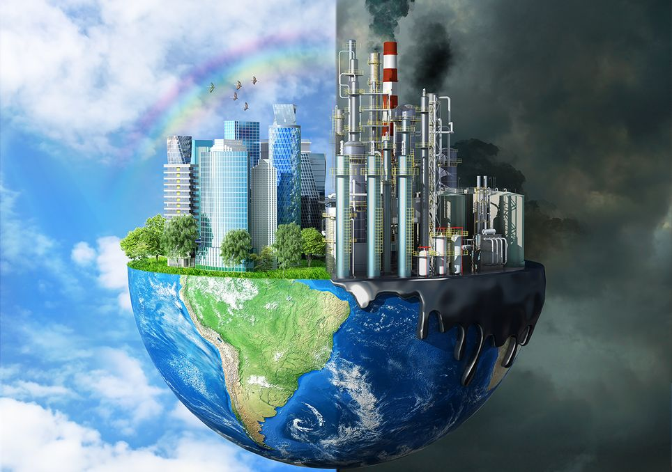

El CAMBIO CLIMATICO
El cambio climático se refiere a los cambios a largo plazo de las temperaturas y los patrones climáticos. Estos cambios pueden ser naturales, por ejemplo, a través de las variaciones del ciclo solar. Pero desde el siglo XIX, las actividades humanas han sido el principal motor del cambio climático, debido principalmente a la quema de combustibles fósiles como el carbón, el petróleo y el gas.
Causas del cambio climatico
Entre las principales causas del cambio climatico estan:
- Deforestación: gracias a la fotosíntesis, los árboles absorben CO2 y lo devuelven a la atmósfera en forma de oxígeno, actuando así como reguladores naturales del clima. La tala descontrolada de selvas tropicales está poniendo en jaque este efecto tan beneficioso.
- Combustión de combustibles fósiles: a combustión de carbón, petróleo y gas produce dióxido de carbono y óxido nitroso.
- Fertilizantes con nitrógeno: este tipo de fertilizantes cada vez son más usados en la agricultura y producen grandes cantidades de óxido nitroso.
- Desarrollo de la ganadería: el ganado es una de las principales fuentes emisoras de metano. Para hacernos una idea, si las vacas formaran un país entero, sería el tercero en emisiones de gases de efecto invernadero. De hecho, Naciones Unidas recomienda reducir nuestro consumo de carne como una de las principales recetas para luchar contra el cambio climático.
- Aumento de la población: la población mundial no deja de crecer y consumir. Esto provoca que procesos de producción para dar respuesta a tanta demanda aumenten y lo haga también la emisión de CEI.